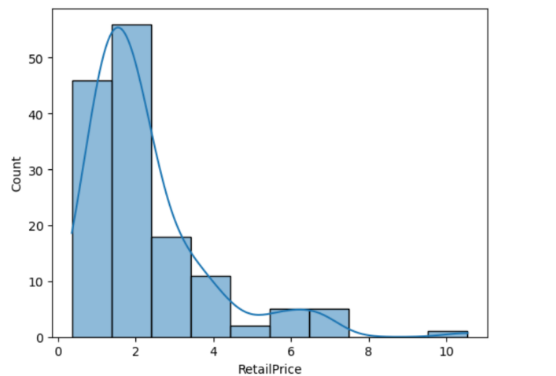
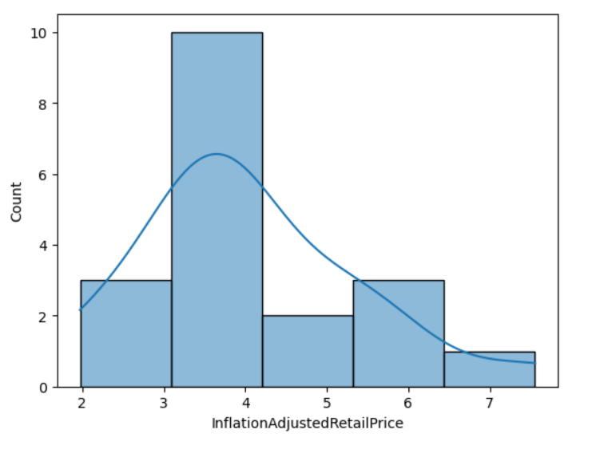
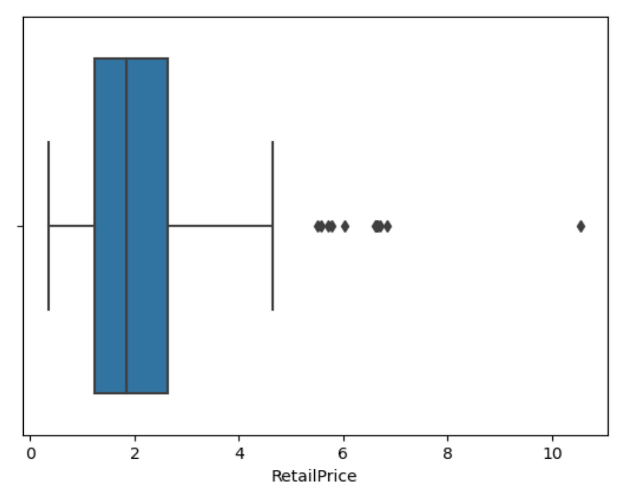
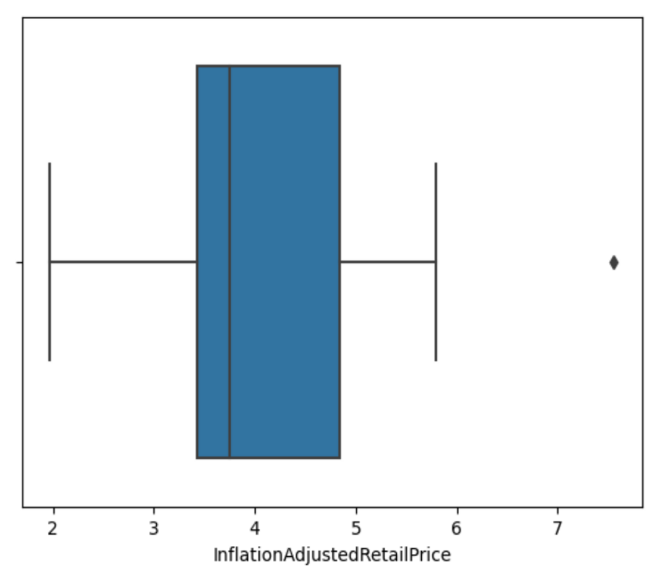

I consider the three datasets that I found reliable and comprehensive. They are reliable because they come from the US Department of Agriculture’s Economic research on the prices of fruits, vegetables, and snack foods. This data is comprehensive because it contains information about different types of fruits, vegetables, and snacks and their different forms (e.g. the dataset on fruit talks about the costs of apple sauce, apples in fruit form, and apple juice). Additionally, the fruit and vegetable datasets are up-to-date, last updated in 5/24/23.
| Fruits and Vegetables | Snacks |
|---|---|
|

|

|
|

|

|
| Analysis | |
| Fruit and vegetable (f&v) prices are strongly right skewed. Most f&v cost between $1.5 and $2.5 per pound. The central price for f&v is about $1.9 per pound. Outlier prices exist above $5.5 per pound. F&v prices vary from $0.2 to $4.75. | Snacks prices are slightly right skewed. Most snack prices are between $3.1 and $4.2 per pound. The middle price for snacks is $3.75 per pound. An outlier snack price is the snack that costs $7.5 per pound. Snack prices vary from $2 to $5.75 per pound (ignoring outliers). |
It is cheaper, on average, to purchase fruits and vegetables in the US in 2023 than to purchase snack foods. The histograms of the fruits and vegetable data are more right skewed than the snack data. This means that relatively more fruits and vegetables are concentrated around cheaper prices than snacks. In 2023, fruits and vegetables cost an average of $2.27 per pound. In 2023, snacks cost an average of $4.06. This means that snacks cost $1.21 more than fruits and vegetables on average. This trend is the same with the median: $1.9 per pound of fruits/vegetables versus $3.75 per pound of snacks. The fruit and vegetable prices vary from $0.2 to $4.75. On the other hand, snacks range at higher costs, from $2 per pound to $5.75 per pound. Most of the fruit and vegetable costs are between $1.5 and $2.5 while for snacks it is between $3.1 and $4.2.